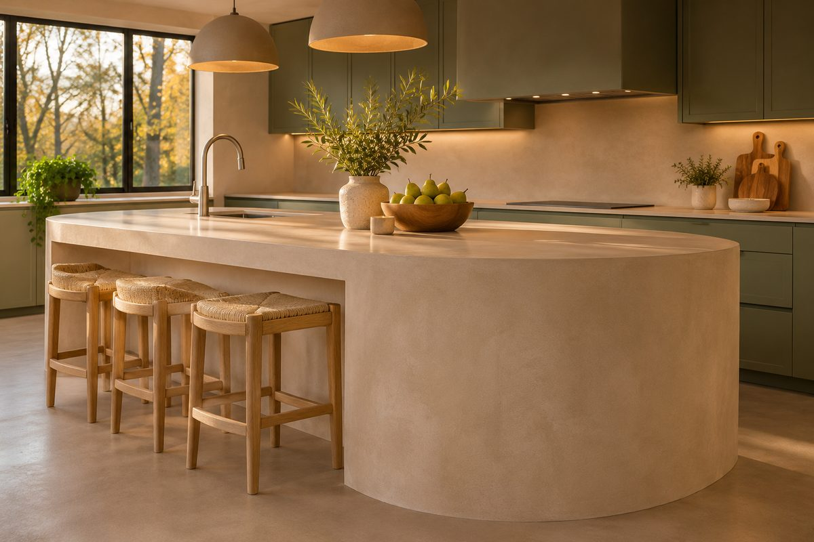
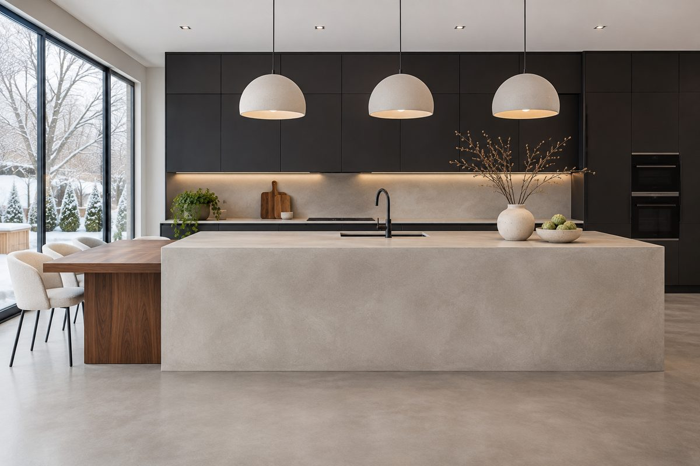
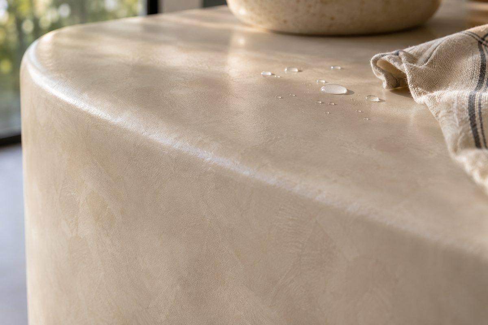

Walk through any new build in Vaughan or any renovated semi in Leslieville and you will see the same island: a slab of white quartz with a mitred waterfall edge, a visible seam somewhere it should not be, and cabinet doors underneath. It was the upgrade of the 2010s. Now the major design publications are calling the waterfall island overdone, and the replacement they keep pointing to is the sculptural, single-material island: rounded ends, plinth bases, solid sides, and one continuous surface from floor to countertop.
Microcement is the most practical way to get that look in a real GTA kitchen. It is a thin, hand-troweled mineral coating, roughly 2 to 3 mm thick, that wraps the top, sides and ends of an island with no seams, no mitres and no joints. Here is what most contractors will not tell you up front: it is not right for every island, and it is not right for every cook. This guide covers both sides.
Why the Microcement Kitchen Island Is Replacing the Waterfall
No seams, ever. A 10-foot quartz island usually needs a joint, and a waterfall needs two mitred corners that can chip. Microcement is applied in place, so the surface runs unbroken over any length and around any curve.
Curves are finally affordable. Rounded and pill-shaped islands are the defining 2026 shape. In stone, a radius end means custom fabrication and a lot of waste. In microcement, the carpenter builds the curve and we trowel over it.
It reads as architecture, not furniture. A monolithic island in warm greige, clay or stone grey looks like part of the house. Paired with white oak, walnut or matte black cabinetry, it is the quiet-luxury kitchen GTA homeowners keep saving on Pinterest.
You can keep the cabinets. In many kitchens we clad the existing island box. The drawers and storage stay, the outside becomes one seamless shell.

“A waterfall island shows you where the stone was cut. A microcement island shows you nothing but the shape.”
Microcement Kitchen Island Cost in Toronto (2026)
Price depends on three things: how many faces you finish, whether the shape is straight or curved, and what is underneath. These are typical installed ranges across Toronto, Mississauga, Oakville and the GTA for a standard 7 to 9 foot island:
| Scope | Installed Cost (GTA, 2026) | Typical Timeline |
|---|---|---|
| Clad sides and ends only (keep existing top) | $3,000 – $5,500 | 3 – 4 days |
| Full monolithic wrap: top, sides and ends | $7,500 – $12,500 | 5 – 7 days |
| Curved or rounded-end island (new curved substrate) | $9,500 – $16,000 | 6 – 9 days |
| Island plus matching backsplash or range hood | $12,000 – $20,000 | 7 – 10 days |
For context, a new quartz waterfall island in the GTA commonly runs $6,000 to $14,000 for the stone alone, and a curved natural-stone top can go well past $20,000. Curved islands include the carpentry needed to build the radius; straight cladding jobs usually do not need a carpenter at all. Every quote we give is fixed after a site visit, not a per-square-foot guess.
Microcement Island Countertop: Will It Survive Real Cooking?
This is where honest answers matter. A microcement island top is durable, but it behaves like a natural mineral surface, not like quartz. Here is how it performs day to day:
- Water and spills: A properly sealed surface beads water and wipes clean. Coffee, wine and oil wipe up if you do not leave them overnight.
- Hot pans: Use a trivet. The sealer is the weak point, not the cement. A pan straight off a burner can mark the topcoat. The same rule applies to quartz.
- Knives: Always use a board. You can scratch the sealer, and a deep cut needs a local repair.
- Acids: Lemon juice and vinegar sitting for hours can dull a matte finish. Wipe them up and the surface stays even.
- Impact: A dropped cast-iron pot on a sharp corner can chip any finish. That is one more reason rounded edges are the smart choice.

If your island is your main prep zone and you cook every night with high heat, we will often suggest a hybrid: microcement on the sides, ends and toe-kick, with a durable top where the heavy work happens, or a microcement top paired with a built-in end-grain board zone. You still get the sculptural, seamless look from across the room. A microcement top is a great fit for a serving, baking or entertaining island. Be honest with yourself about how you cook, and we will be honest about what will last.
How a Microcement Kitchen Island Is Built
- 1. Assess the base. Existing islands must be rigid. Loose panels, flexing overhangs or water-damaged MDF get fixed or replaced first.
- 2. Create the shape. For curves or thick slab looks, a carpenter adds a stable substrate. Overhangs for stools are reinforced so they do not flex.
- 3. Prime and reinforce. A bonding primer and fibreglass mesh go on, with extra reinforcement at corners and edges.
- 4. Trowel the layers. Base coats build strength; fine finish coats create the soft cloudy texture.
- 5. Seal for food zones. Multiple coats of a food-safe, stain-resistant polyurethane sealer protect the top. Then it cures before heavy use.
Most of the work happens on site with minimal dust, and you keep using the rest of your kitchen while we work. Plan on light use of the island for about a week after the final coat.

Microcement Island Design Ideas for GTA Kitchens
- The rounded end. One soft radius at the seating side. Easier on hips, kids and hallways, and the most-requested shape of 2026.
- The plinth base. A recessed toe-kick in the same finish makes the island look like it floats.
- The two-material island. A microcement block with a walnut or white oak dining extension. Warm wood softens the mineral surface.
- Tone-on-tone. Island in a shade slightly darker than the walls for a calm, layered kitchen in Oakville or Burlington.
- The matching hood. Repeat the island colour on a plastered range hood for a kitchen that feels designed, not assembled.
When We Tell You to Skip It
- Your island moves or flexes. No coating survives a wobbling base. Fix the structure first.
- You want zero maintenance. Microcement needs a reseal of the top every few years. Quartz is lower effort.
- You chop directly on the counter. Choose a hybrid design instead.
- You are listing in two months. Freshen the paint and lighting. Save the island for the house you are staying in.
Where We Work
Artisan Coat finishes microcement kitchen islands, countertops, backsplashes, range hoods and feature walls across Toronto, Mississauga, Brampton, Vaughan, Oakville, Etobicoke, North York, Scarborough, Richmond Hill, Markham, Burlington and the wider GTA. One crew handles prep, reinforcement, finish and sealer, backed by a 3-year written warranty and 20+ years of surface work.
The Short Version
A microcement kitchen island gives you the seamless, sculptural look that is replacing the quartz waterfall in 2026, with curves and slab-like profiles that stone makes expensive. In Toronto, cladding the sides runs about $3,000–$5,500, a full monolithic wrap $7,500–$12,500, and a curved island $9,500–$16,000.
Use a trivet, use a board, and reseal the top every few years. Choose the right shape for how your family actually uses the kitchen, and the island becomes the piece everyone touches when they walk in.